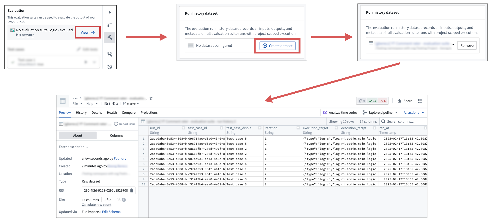

Depending on the evaluated function and workflow, evaluation suite run results may need to be surfaced in other parts of the platform. For example, subject matter experts may not be technical enough to analyze results in AIP Evals, and may want the run data displayed alongside other information in a dedicated Workshop application.
To address this need, AIP Evals supports writing run results to a dataset.
When a run results dataset is configured and the evaluation suite is run with project-scoped execution mode, all generated information from the run will be automatically written to a configured dataset. This includes function outputs, evaluator results, user-specified and auto-captured metadata, and errors. Note that passed and failed results for each metric based on your configured objectives are not yet supported and that a tested function that edits the ontology will not produce a function output.
Run result datasets offer maximum flexibility on what can be done with generated data. Using existing Foundry tooling, data can be used for more complex calculations, for example by writing it to objects and surfacing them in Workshop, or by performing deeper analyses in Contour.
:::callout{theme="warning"} To write run results to a dataset, the evaluation suite needs to be run in project-scoped execution mode, and the run results dataset needs to be in the same project as the evaluation suite. Otherwise, AIP Evals will not be able to write data to the dataset. :::
To configure a run results dataset, follow these steps:
After these steps, the dataset will be ready for use, and running the evaluation suite in project-scoped execution mode will write results to the dataset.
Note that if you remove a run results dataset, you will not be able to select it again. You will need to create a new dataset.
